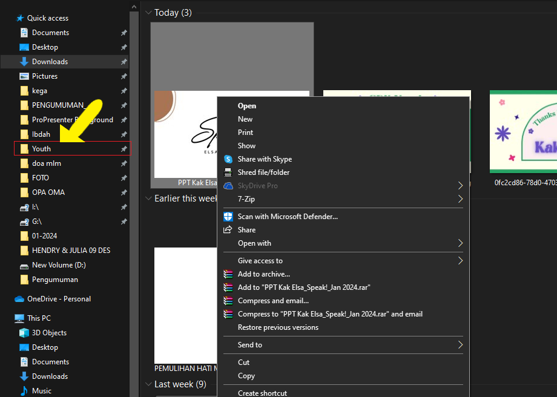
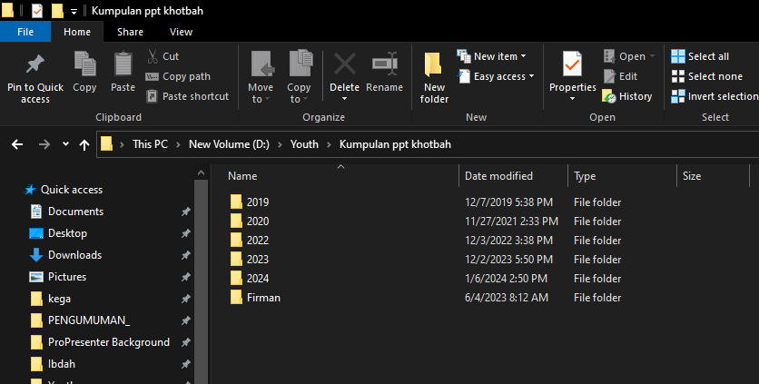

üìÅ File Manager - PPT Khotbah
üìã Panduan Menyimpan PPT Firman/Khotbah
-
Download PPT Firman dari group WhatsApp Youth
Pastikan file sudah terunduh dengan lengkap sebelum melanjutkan ke langkah berikutnya -
Copy PPT tersebut dengan cara klik kanan pada file, lalu pilih "Copy" atau tekan Ctrl + C

-
Masuk ke folder Youth
Biasanya terletak di drive utama atau sesuai dengan struktur folder yang telah ditentukan -
Masuk ke folder Kumpulan ppt khotbah
Folder ini berisi semua koleksi PPT khotbah yang telah tersimpan
-
Pilih folder sesuai tanggal PPT firman tersebut, lalu Paste di sini dengan cara klik kanan dan pilih "Paste" atau tekan Ctrl + V
Pastikan folder tanggal sudah sesuai dengan jadwal khotbah yang akan disampaikan
üí° Tips Penting:
- Selalu periksa nama file sebelum menyimpan untuk memastikan tidak ada duplikasi
- Pastikan tanggal folder sesuai dengan jadwal pelayanan
- Jika ragu, konsultasikan dengan Head Multimedia terlebih dahulu
- Backup file penting secara berkala